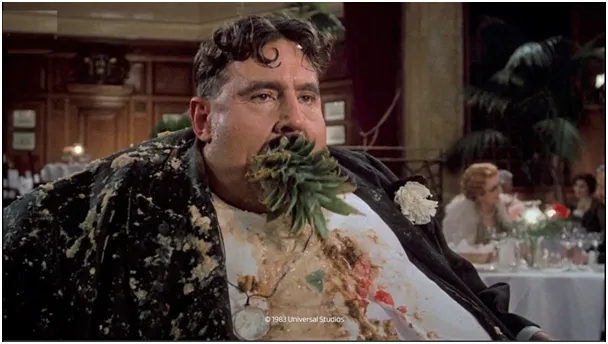
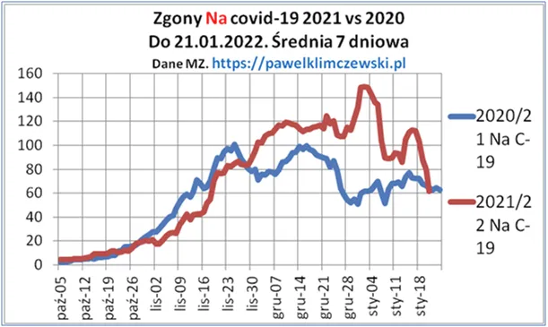

FB jest za duży, za gruby!
Po wielu spektakularnych zamknięciach profili FB widać idzie za ciosem i tnie, co może. Pod koniec 30-dniowego bana całkowicie straciłem dostęp do konta pod pretekstem "bezpieczeństwa", chcą mój numer telefonu, aby wysłać mi SMS z kodem. Głupie to samo w sobie, bo jeśli ktoś przejął moje konto, to da im swój numer i dostanie ten kod. "Telefonu nie mam i co zrobicie?" Była już taka konsternacja, gdy miałem na jakimś lotnisku wgrać sobie apkę covidową. Gdy strażnik w okienku zrozumiał problem, rzucił okiem na szefa, podszedł wtedy najstarszy stopniem oficer, uścisnął mi dłoń, uśmiechnął się porozumiewawczo i było po sprawie. To działa, stosujcie!

Wróćmy do FB. Praktyka jest zupełnie bandycka. Robimy im ruch, oni zgarniają kasę z reklam i co najgorsze, nasze profile mentalne i zachowań, dzięki tej wiedzy dzielą nas na cyfrowe bańki, a gdy mamy inne zdanie niż ich szefowie, to jesteśmy wykluczani. W społeczeństwie informatycznym to de facto izolacja, jak areszt.
Mam na szczęście swoje kontakty w bardziej tradycyjnych kanałach, w sprawach istotnych używam tylko e-maila, itp. Więc nie ma problemu. Ale wyobrażam sobie kogoś, kto wszytko od 5-10 lat robi przez FB i traci dostęp. Żadnych znajomych z wakacji, wszystkie kontakty, hotele, wszytko znika w sekundę. Cały świat znika... ,bo przekazujcie dalej moje posty. No chyba, że nie przekazujecie, wtedy jest "cacy".
Dlatego nie wolno dopuścić, aby być zależnym od takiej usługi. Jestem na https://twitter.com/KlimczewskiPawe i od niedawna na https://mewe.com/i/pawe%C5%82klimczewski, gdzie z dr Normanem Pieniążkiem sobie w kameralnej atmosferze rozmawiamy o wirusach i społecznym wymiarze ich istnienia https://mewe.com/i/normanpieniazek
FB przyszłości nie ma, przynajmniej dla niezależnych opinii i trudnych pyta. Zapraszam serdecznie na te fora, na oraz na stronę https://pawelklimczewski.pl
Gdy w połowie XX wieku amerykański potentat telefoniczny był "za duży aby upaść" a zarazem kontrolował cały ruch telekomunikacyjny, podzielono go na wiele części. Potęga jądrowa USA była zagrożona przez swoją firmę telefoniczną, która mogła bezkarnie podsłuchiwać każdego wg. uznania. Dziś jesteśmy w podobnej sytuacji, prezydent USA traci kontakt z polową wyborców, bo zablokowali mu konto. Żenujące! Nie dajmy się zapędzać dalej w kozi róg tylko zdywersyfikujmy ten ruch.
Kropla drąży skalę a krople to my, nikt inny!
Proszę Was o info na e-maila, kontakt@pawelklimczewski.pl gdzie jesteście w swym cyfrowym życiu, czy Telegram czy Tweeter , FB, itp. Taka sonda.

I coś na koniec, MZ podaje za ostatnią dobę 30 zmarłych na covid co daje 62 średni dziennie w ostatnim tygodniu. O tym jak produkuje się statystyki "Na covid" oraz "Z covid" piszę tutaj: https://pawelklimczewski.pl/2022/01/11/ksiega-liczb-czyli-greckie-numeri
Paweł Klimczewski